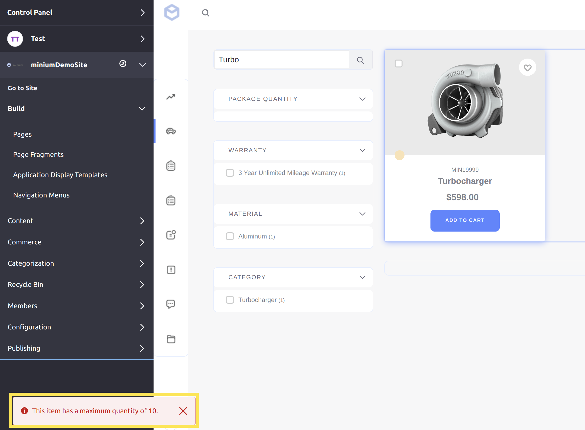

Implementing a Custom Order Validator¶
This tutorial will show you how to add a custom order validator by implementing the CommerceOrderValidator interface.
An order validator is a class that validates items in a customer’s cart when proceeding through checkout. Liferay Commerce provides multiple out-of-the-box order validators, including a default, as well as validators to check item versions and recurring items (subscriptions).
Deploy an Example¶
In this section, we will get an example order validator up and running on your instance of Liferay Commerce. Follow these steps:
Start Liferay Commerce.
docker run -it -p 8080:8080 liferay/commerce:2.0.4Download and unzip Acme Commerce Order Validator.
curl liferay-n9b2.zip
unzip liferay-n9b2.zip
Go to
liferay-n9b2.cd liferay-n9b2Build and deploy the example.
./gradlew deploy -Ddeploy.docker.container.id=$(docker ps -lq)
Note: This command is the same as copying the deployed jars to /opt/liferay/osgi/modules on the Docker container.
Confirm the deployment in the Docker container console.
STARTED com.acme.n9b2.impl_1.0.0
Verify that the example order validator was added by viewing the failure message. Open your browser to
https://localhost:8080and navigate to a catalog with at least one item priced over $100. If no such product exists yet, add it yourself; see Creating a Simple Product for more information.From the catalog, find the item with this price, then click “Add to Cart”. Increase the quantity to 11 or more, then click the arrow to continue. The error message that appears shows that the custom order validator successfully rejected adding the item.

Congratulations, you’ve successfully built and deployed a new order validator that implements CommerceOrderValidator.
Next, let’s dive deeper to learn more.
Walk Through the Example¶
In this section, we will review the example we deployed. First, we will annotate the class for OSGi registration. Second, we will review the CommerceOrderValidator interface. And third, we will complete our implementation of CommerceOrderValidator.
Annotate the Class for OSGi Registration¶
@Component(
immediate = true,
property = {
"commerce.order.validator.key=" + N9B2CommerceOrderValidator.KEY,
"commerce.order.validator.priority:Integer=9"
},
service = CommerceOrderValidator.class
)
public class N9B2CommerceOrderValidator implements CommerceOrderValidator {
public static final String KEY = "Example";
It is important to provide a distinct key for the order validator so that Liferay Commerce can distinguish the new order validator from others in the order validator registry. Reusing a key that is already in use will override the existing associated validator.
The
commerce.order.validator.priorityvalue indicates when the order validator will perform its validation in sequence with other validators. For example, the default order validator has a value of 10. Giving our order validator a value of 9 ensures that it will perform its validation immediately before the default validator.
Review the CommerceOrderValidator Interface¶
Implement the following methods:
public String getKey();
This method provides a unique identifier for the order validator in the order validator registry. The key can be used to fetch the validator from the registry. Reusing a key that is already in use will override the existing associated validator.
public CommerceOrderValidatorResult validate(Locale locale, CommerceOrder commerceOrder, CPInstance cpInstance, int quantity) throws PortalException;
This is one of the two validation methods where we will add our custom validation logic. This method is called whenever a customer adds an item to their cart. It does this by returning aCommerceOrderValidatorResult, which uses a boolean to signal whether or not the result passes validation; see CommerceOrderValidatorResult.java.
public CommerceOrderValidatorResult validate(Locale locale, CommerceOrderItem commerceOrderItem) throws PortalException;
This is the second validation method where we can add custom validation logic. This method is called for items already in the cart, whenever a customer proceeds to a new step in checkout.
Complete the Order Validator¶
The order validator is comprised of validation logic for both adding a product to the cart and proceeding to a new checkout step. Do the following:
- Add validation logic for adding a product to cart.
- Add validation logic for proceeding in checkout.
- Add the language keys to
Language.properties.
The two validate methods are where we define the custom validation logic for our order validator. In our example, we will add logic to reject orders with more than ten of an item over a certain price.
Add Validation Logic for Adding a Product to Cart¶
@Override
public CommerceOrderValidatorResult validate(
Locale locale, CommerceOrder commerceOrder, CPInstance cpInstance,
int quantity)
throws PortalException {
if (cpInstance == null) {
return new CommerceOrderValidatorResult(false);
}
BigDecimal price = cpInstance.getPrice();
if ((price.doubleValue() > 100.0) && (quantity > 10)) {
ResourceBundle resourceBundle = ResourceBundleUtil.getBundle(
"content.Language", locale, getClass());
return new CommerceOrderValidatorResult(
false,
LanguageUtil.get(
resourceBundle, "this-item-has-a-maximum-quantity-of-10"));
}
return new CommerceOrderValidatorResult(true);
}
The main validation check for our example is to check if both the price (stored as a
BigDecimal) is more than $100, and the quantity is greater than ten. We get the price information from theCPInstance, which contains information about the order the customer has added. To find more methods you can use with aCPInstance, see CPInstance and CPInstanceModel.Note that it is best practice to include a localized message explaining why the validation failed for the main validation checks.
Add Validation Logic for Proceeding in Checkout¶
@Override
public CommerceOrderValidatorResult validate(
Locale locale, CommerceOrderItem commerceOrderItem)
throws PortalException {
BigDecimal price = commerceOrderItem.getUnitPrice();
if ((price.doubleValue() > 100.0) &&
(commerceOrderItem.getQuantity() > 10)) {
ResourceBundle resourceBundle = ResourceBundleUtil.getBundle(
"content.Language", locale, getClass());
return new CommerceOrderValidatorResult(
false,
LanguageUtil.get(
resourceBundle,
"expensive-items-have-a-maximum-quantity-of-10"));
}
return new CommerceOrderValidatorResult(true);
}
Add the same validation logic to this method, since it will be called for the items in the customer’s cart. The main difference in this case is we get the information from aCommerceOrderItemobject; see CommerceOrderItem and CommerceOrderItemModel to find more methods you can use with aCommerceOrderItem.
Add the Language Keys to Language.properties¶
Add the language keys and their values to a Language.properties file within our module:
expensive-items-have-a-maximum-quantity-of-10=Expensive items have a maximum quantity of 10.
this-item-has-a-maximum-quantity-of-10=This item has a maximum quantity of 10.
See Localizing Your Application for more information.
Conclusion¶
Congratulations! You now know the basics for implementing the CommerceOrderValidator interface, and have added a new order validator to Liferay Commerce.